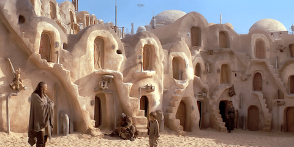
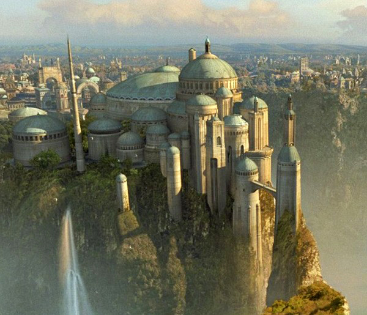
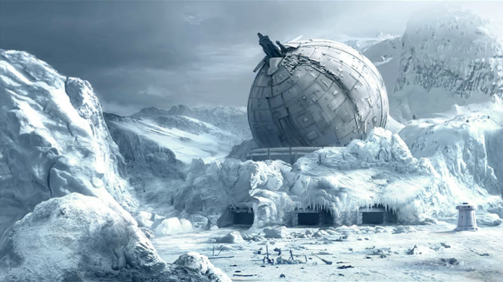

PLANETAS
| Planeta | Descripción | Lugar |
|---|---|---|
| Tatooine | Un planeta desértico iluminado por dos estrellas y con un duro clima. Poblado escasamente, la mayoría de sus habitantes trabajan en granjas de humedad, donde emplean vaporizadores con el fin de obtener agua para su propio consumo y venta. Está bajo el control de los hutts y es un lugar de tránsito para piratas, cazarrecompensas y traficantes. Entre sus pobladores autóctonos se encuentran los jawas, unos pequeños vendedores de chatarra que se cubren por completo con una túnica, y los incursores tusken o moradores de las arenas, una agresiva raza muy territorial y xenófoba que rechaza la convivencia con cualquier otra en el planeta. Lugar de nacimiento de Anakin Skywalker. |  |
| Naboo | Con capital en Theed, es un pacífico planeta colonizado por los humanos y colmado de verdes praderas y colinas. Sus habitantes nativos son conocidos como gungan, tienen forma de anfibio y su mayor ciudad, Otoh Gunga, se encuentra sumergida bajo el lago Paonga. Lugar de nacimiento y gobierno de Amidala Padmé, esposa de Anakin Skywalker. |  |
| Hoth | Un inhóspito planeta helado cuya temperatura se mantiene durante todo el día bajo cero grados. Entre su fauna autóctona se encuentran el depredador wampa y el tauntaun. |  |